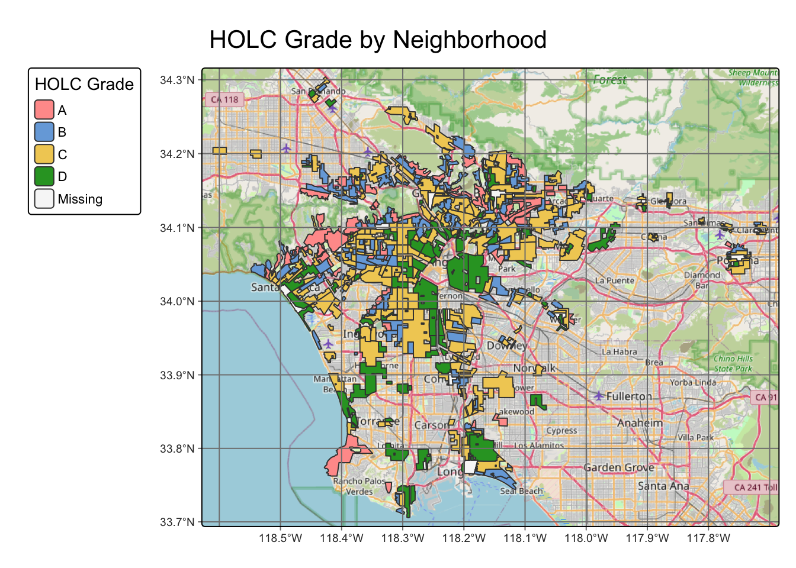
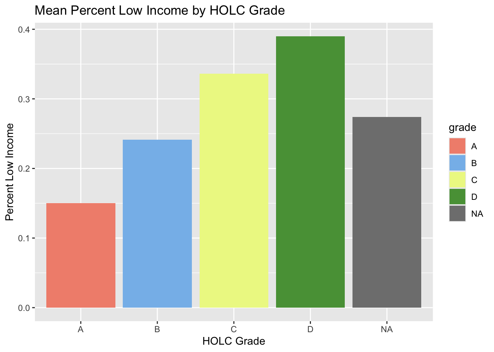
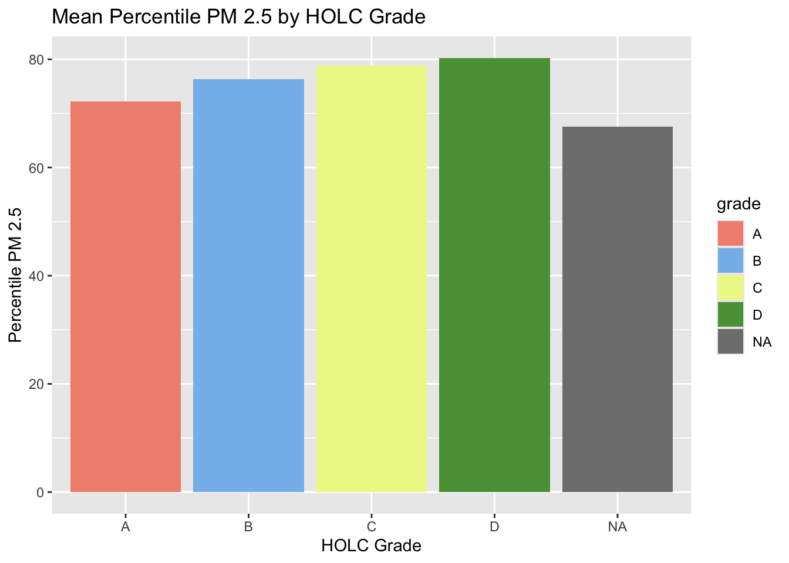
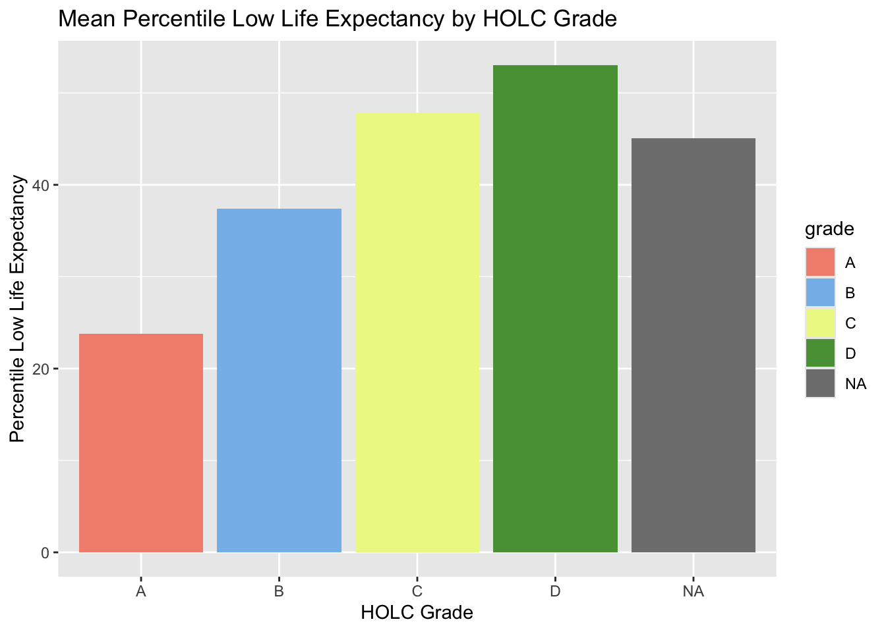
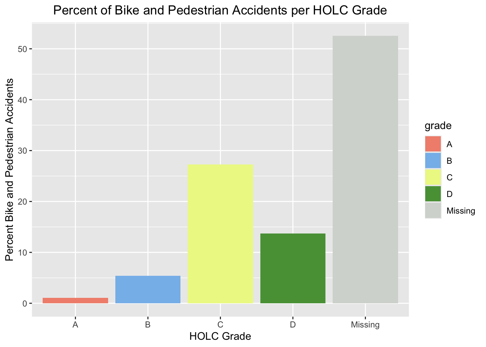

── Conflicts ────────────────────────────────────────── tidyverse_conflicts() ──
✖ dplyr::filter() masks stats::filter()
✖ dplyr::lag() masks stats::lag()
ℹ Use the conflicted package (<http://conflicted.r-lib.org/>) to force all conflicts to become errors
# Create a sf out of SWITS. POINT_X and POINT_Y have less NAs than lat/lon swit_SF <- SWITRS |>filter((!is.na(POINT_X) &!is.na(POINT_Y))) |>st_as_sf(coords =c("POINT_X", "POINT_Y"), crs =4326)
# Check CRS type of all 3 datasets to make sure they matchnames(SWITRS)
# Change crs of ejscreenejscreen <-st_transform(ejscreen, crs =4326)# Filter ejscreen for LA countyla_ejscreen <- ejscreen |>filter(CNTY_NAME=='Los Angeles County')
# Create a map of HOLC grade by neighborhood. tm_shape(mapping_inequality)+tm_polygons(fill ="grade",fill.legend =tm_legend(title ="HOLC Grade", position =tm_pos_out("left")))+tm_title("HOLC Grade by Neighborhood") +tm_basemap('OpenStreetMap') +tm_graticules()

# Join ejscreen and HOLC data: joined_ejscreen_HOLC <-st_join(la_ejscreen, mapping_inequality) |>st_drop_geometry()
although coordinates are longitude/latitude, st_intersects assumes that they
are planar
# Check if the CRS's of the data frames merged above match. if (st_crs(la_ejscreen) !=st_crs(mapping_inequality)) {warning("CRS's of ejscreen and mapping_inequality do not match")}else{print("No CRS mismatch.")}
[1] "No CRS mismatch."
# Create a summary table for percent in each HOLC group# ifelse(test, yes, no)summary_table <- joined_ejscreen_HOLC |>group_by(grade) |>summarise(n = (n())) |>mutate(grade =ifelse( grade %in%c("A", "B", "C", "D"), grade, "NA")) |>mutate(`Percent Census In Grade`=((n)/(sum(n)) *100)) |>rename(`Number of Census Tracts Per Grade`=n) |>rename(`HOLC Grade`= grade) |>st_drop_geometry()kable(summary_table)
HOLC Grade
Number of Census Tracts Per Grade
Percent Census In Grade
A
449
4.99555
B
1239
13.78505
C
3058
34.02314
D
1346
14.97552
NA
2896
32.22074
# Find percent low income in HOLC grades HOLCgradepercents <- joined_ejscreen_HOLC |>group_by(grade) |>drop_na(LOWINCPCT, P_PM25, P_LIFEEXPPCT) |>summarise(meanlowinc =mean(LOWINCPCT),meanpm25 =mean(P_PM25), meanlifeexp =mean(P_LIFEEXPPCT))
# Establish grade colors to be used in subsequent visualizations. colors <-c("A"="#F2907C", "B"="#86BCEB", "C"="#EDF792", "D"="#589E44", "Missing"="#D5D9D4")
# Plot the low income percents per grade. ggplot(HOLCgradepercents, aes(x=grade, y=meanlowinc, fill=grade))+geom_col()+scale_fill_manual(values = colors)+labs(title="Mean Percent Low Income by HOLC Grade", x="HOLC Grade", y="Percent Low Income")

# Plot mean pm25 percent per grade. ggplot(HOLCgradepercents, aes(x=grade, y=meanpm25, fill=grade))+geom_col()+scale_fill_manual(values = colors)+labs(title="Mean Percentile PM 2.5 by HOLC Grade", x="HOLC Grade", y="Percentile PM 2.5")

# Plot mean lifeexp per grade. ggplot(HOLCgradepercents, aes(x=grade, y=meanlifeexp, fill=grade))+geom_col()+scale_fill_manual(values = colors)+labs(title="Mean Percentile Low Life Expectancy by HOLC Grade", x="HOLC Grade", y="Percentile Low Life Expectancy")

The results of these graphs show that “worse” HOLC grades are in higher percentiles of low life expectancy, and are more often considered low income. PM2.5 percentiles also rise across HOLC grades, but to a less extreme extent as the other two variables.
Discuss potential relationships between historical redlining grades and current environmental/socioeconomic conditions It seems that historical redlining grades come with issues of environmental justice, because the areas with a C or D grade are correllated with worse socioeconomic aand environmental conditions. This shows that HOLC grades section off people who are worse off in socioeconomic terms, and they demonstrates that they also often have to face the brunt of worse environmental conditions such as higher particulate matter 2.5. Historically, this is aligned with instances of people of color being pushed into areas nearer freeways or other pollution sources, and thus being exposed to worse environmental conditions. They then get placed in a worse HOLC grade.
# Full join mapping_inequality and swit_SFjoined_HOLC_swit <-st_join(swit_SF, mapping_inequality) |>st_drop_geometry() |># default: `st_intersects` select(grade, LATITUDE, LONGITUDE, PEDESTRIAN_ACCIDENT, BICYCLE_ACCIDENT, NUMBER_KILLED)
although coordinates are longitude/latitude, st_intersects assumes that they
are planar
although coordinates are longitude/latitude, st_intersects assumes that they
are planar
ggplot(pct_bike_ped_accidents, aes(x=grade, y=Percent, fill=grade))+geom_col()+labs(title="Percent of Bike and Pedestrian Accidents per HOLC Grade", x="HOLC Grade", y="Percent Bike and Pedestrian Accidents")+theme(plot.title=element_text(hjust=.5))+scale_fill_manual(values = colors)

This graph shows that as HOLC grades move from A towards D, the percent of bike and pedestrian accidents tends to increase. Although there is a higher percent of accidents in the C grade than in the D grade, there is still a noticeable difference between the percent of accidents in grades A and B and grades C and D. The larger percentage of C crashes than D crashes could also be explained by the fact that there are more C than D grades.
# See how many D grades there are compared to C grades to potentially explain the larger percentage of accidents in the C grade.sum(joined_HOLC_swit$grade =="D", na.rm=TRUE)